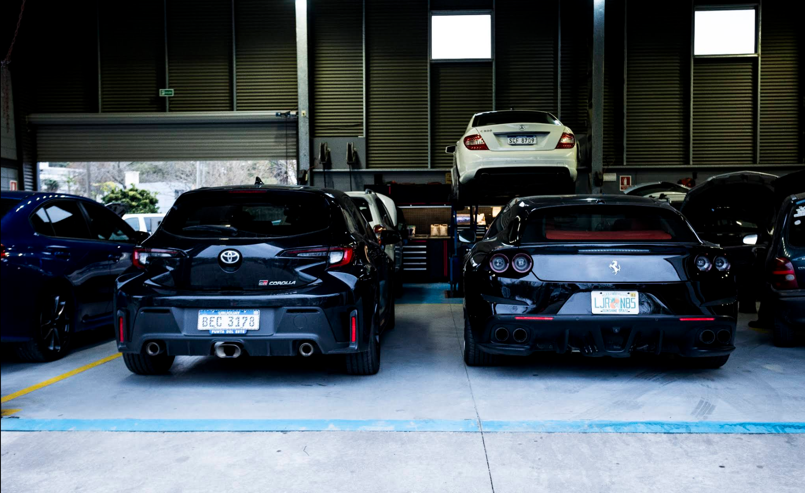
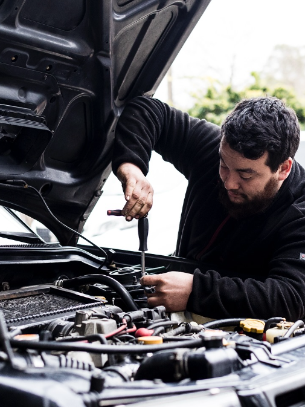
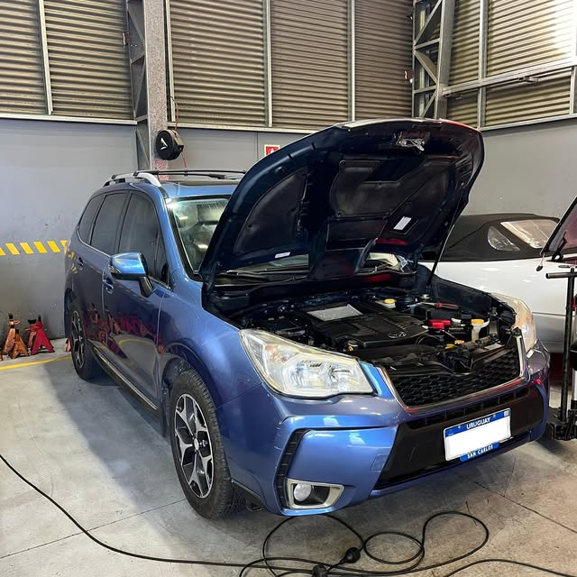
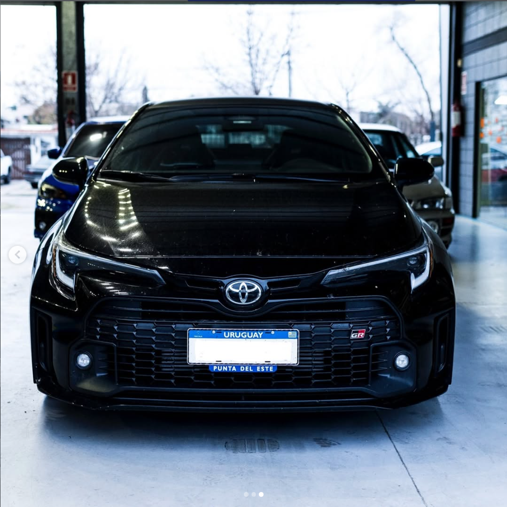
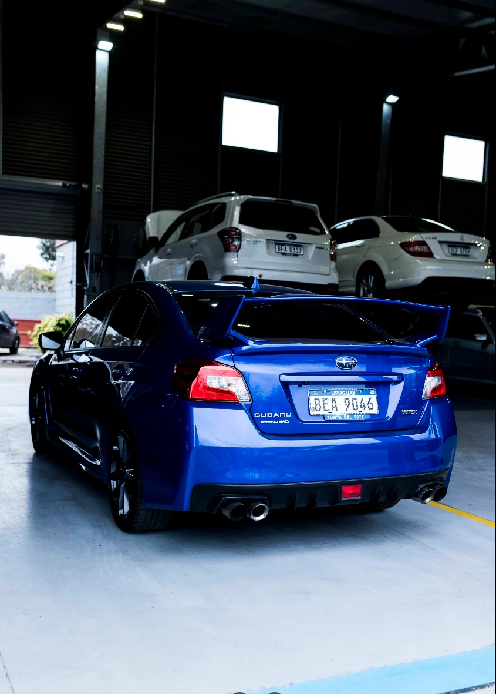

Atención multimarcaVehículos particulares y utilitarios
TALLER PABLO LOZANO · MONTEVIDEO
Tu auto.
Nuestra
pasión.
Mecánica, tecnología y atención al detalle.
Para lo que te mueve, todos los días.
ATENCIÓN MULTIMARCAMONTEVIDEO, URUGUAY
MECÁNICA AUTOMOTRIZ · SERVICIO MULTIMARCAExplorá MOTORLOZ
Experiencia en distintas marcas.
TOYOTA
FERRARI
CORVETTE
Distintas marcas y modelos, con la misma dedicación en cada visita. Una afinidad especial por Subaru y atención multimarca.
01 / EL TALLERMONTEVIDEO · URUGUAY

MECÁNICA, CRITERIO Y CERCANÍA
La experiencia
está en el detalle.
Hay autos que son mucho más que un medio de transporte. Son parte de tu rutina, de tus planes y de tu historia.
En MOTORLOZ reunimos mecánica general, mantenimiento y diagnóstico para cuidar vehículos particulares y utilitarios. Distintas marcas. Una misma dedicación.
Conocé el taller por dentroDiagnóstico con criterioBuscamos la causa, no el atajo
Servicio oficial HyundaiLozano & Oliva, en el mismo local

EN GUILLERMO ARROSPIDE 5311
Lozano & Oliva.
Servicio oficial Hyundai.
MOTORLOZ y Oliva Automotores se unieron para crear Lozano & Oliva, integrante de la red de servicios oficiales Hyundai en Uruguay.
Una propuesta de atención específica para Hyundai en la misma dirección del taller.
Conocé el servicio oficial Alianza anunciada por Oliva Automotores y Hyundai Uruguay.ATENCIÓN COORDINADA · MONTEVIDEO
¿Necesitás revisar algo
de tu auto?
Contanos qué notaste y qué vehículo tenés. El formulario ordena la consulta antes de abrir WhatsApp.
Preparar consultaESCUCHAR · REVISAR · EXPLICAR
¿Frustrado por
problemas del auto?
Un ruido, una luz en el tablero o un cambio en la respuesta pueden tener distintas causas. Contanos qué notaste y coordinamos una revisión con el taller.
Contanos qué está pasando UN PRÓXIMO PASO CLARO, DESDE EL PRIMER CONTACTO

02 / QUÉ HACEMOSEL CUIDADO, EN CADA SISTEMA
MECÁNICA · MANTENIMIENTO · DIAGNÓSTICO
Todo conectado.
Todo importa.
Del mantenimiento periódico a una falla puntual. Encontrá el servicio que necesita tu vehículo y consultá directamente con el taller.

01 / MECÁNICA
Mecánica general
Diagnóstico y reparación para resolver fallas y cuidar el funcionamiento del vehículo.
- Motor y transmisión
- Frenos y sistemas auxiliares
- Revisión según el síntoma

02 / RODADO
Alineación y balanceo
Para recuperar estabilidad al conducir y ayudar a lograr un desgaste parejo.
- Alineación del vehículo
- Balanceo de ruedas
- Revisión de desgaste

03 / SUSPENSIÓN
Suspensión
Revisión de los componentes que influyen en estabilidad, confort y control.
- Amortiguadores y resortes
- Bujes y rótulas
- Inspección de componentes
04 / ELECTRÓNICA
Electricidad automotriz
Detección de fallas eléctricas y electrónicas para definir el siguiente paso.
- Arranque y carga
- Iluminación y sensores
- Diagnóstico de módulos

05 / CUBIERTAS
Cubiertas
Opciones y trabajos para elegir según el vehículo y el uso que le das.
- Venta y montaje
- Reparación y rotación
- Orientación para elegir
06 / MANTENIMIENTO
Aceite y mantenimiento
Rutinas periódicas para mantener el vehículo en buenas condiciones.
- Cambio de aceite y filtros
- Revisiones periódicas
- Cuidado preventivo del motor
03 / PUERTAS ADENTROSEGUINOS EN INSTAGRAM ↗
Donde la pasión
se pone a trabajar.
Las manos. Las herramientas.
Los autos que nos mueven.


Un recorrido por el taller, sus instalaciones y los vehículos que forman parte de su día a día.
Ver más en @motorloz ↗CARÁCTER JAPONÉSSubaru en el corazón.
Subaru en el corazón.
Pasión multimarca.
Una afinidad especial por Subaru y la cultura automotriz japonesa. La misma dedicación para vehículos de distintas marcas, incluidos autos de alta gama.
ESPECIALISTAS SUBARU · ATENCIÓN MULTIMARCA TOYOTA GR · VER PUBLICACIÓN ↗
TOYOTA GR · VER PUBLICACIÓN ↗ SUBARU · VER PUBLICACIÓN ↗
SUBARU · VER PUBLICACIÓN ↗04 / PERSONAS Y TECNOLOGÍADETRÁS DE CADA TRABAJO

FORMACIÓN · EXPERIENCIA · CERCANÍA
El oficio evoluciona.
La dedicación
permanece.
La formación continua es parte de la propuesta de MOTORLOZ: sus publicaciones destacan la capacitación en el exterior y la actualización del equipo técnico.
Una mirada que acompaña la evolución del automóvil, desde la mecánica tradicional hasta vehículos eléctricos e híbridos.
Consultá por tu vehículoUNA FORMA CLARA DE CUIDAR TU AUTO
Atención con criterio.
De principio a fin.
El equipo, la conversación y cada paso de la visita importan.
Escuchamos primero
El síntoma también cuenta. Empezamos por lo que notaste.
Revisamos con criterio
Buscamos entender la causa antes de proponer el próximo paso.
Atención multimarca
Vehículos particulares y utilitarios, con atención coordinada.
Servicio oficial Hyundai
Lozano & Oliva atiende Hyundai en la misma dirección.
Contacto directo
Tu consulta llega al taller por WhatsApp luego de completar el formulario.
Un taller en Montevideo
Encontranos en Guillermo Arrospide 5311.
05 / LA EXPERIENCIA DE LOS CLIENTESGOOGLE MAPS
OPINIONES REALES
La confianza
se construye.
Experiencias de quienes confiaron su auto al taller. Opiniones reales, publicadas en Google.
 Ver en Google Maps ↗GoogleTaller Pablo Lozano — MOTORLOZTaller de reparación de automóviles · MontevideoVer perfil, fotos y reseñas ↗
Ver en Google Maps ↗GoogleTaller Pablo Lozano — MOTORLOZTaller de reparación de automóviles · MontevideoVer perfil, fotos y reseñas ↗Datos consultados en Google el 24/09/2026 · Las reseñas no se actualizan en tiempo real.
3 reseñas verificadas · Consultá todas en Google.
EL PRÓXIMO PASO, A TU RITMO
¿Lo vemos
juntos?
Contanos qué necesita tu auto. El equipo revisa tu consulta y coordina contigo el próximo paso.
06 / MOTORLOZ DE CERCAPERSONAS · TECNOLOGÍA · MECÁNICA
Conocimiento.
En acción.
Dos momentos reales del taller. Clips breves para ver el oficio de cerca.

01 / MECÁNICACada detalle cuenta.Motor Subaru WRX · Ver publicación ↗ 02 / TECNOLOGÍAPrecisión y oficio.Herramientas y motor · Ver publicación ↗
02 / TECNOLOGÍAPrecisión y oficio.Herramientas y motor · Ver publicación ↗07 / HABLEMOS DE TU AUTOSOLICITUD DE TURNO
UNA CONSULTA CLARA, UN PRÓXIMO PASO
Contanos qué
le pasa a tu auto.
Completá los datos básicos para ordenar la consulta. El mensaje se abre en WhatsApp para que lo revises antes de enviarlo al taller.
- 01Contanos sobre tu auto
- 02Revisá y enviá el mensaje por WhatsApp
- 03Coordiná con el taller
08 / VENÍ AL TALLERMONTEVIDEO, URUGUAY
Nos vemos
en MOTORLOZ.
Guillermo Arrospide 5311
Montevideo · CP 11400
Lunes a viernes: 8:30–13:00 y 14:00–18:30.
Sábados y domingos: cerrado.
UBICACIÓN VERIFICADAGuillermo Arrospide 5311Montevideo · Abrir para explorar